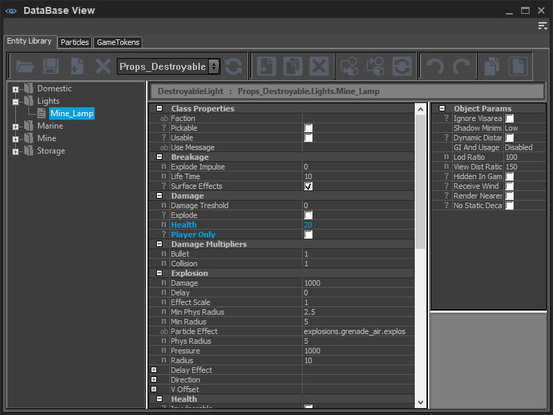
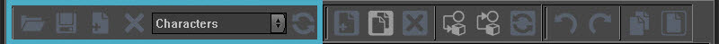
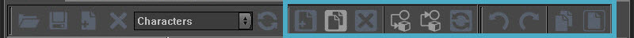
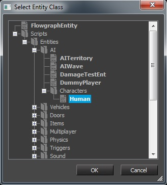
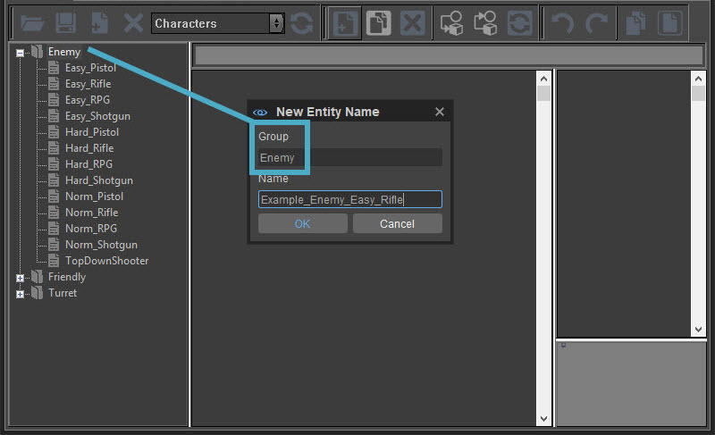

Вкладки «Библиотека сущностей», «Частицы» и GameTokens в представлении DataBase больше не поддерживаются в CRYENGINE. В будущем они будут удалены из движка, и некоторые функции могут работать не так, как ожидалось.
Обзор
Панель просмотра DataBase используется для организации библиотек игровых предметов. Доступ к этим библиотекам и их изменение можно получить на этой панели.
В отличие от других панелей, которые можно найти в разделе «Инструменты», DataBase View на самом деле не является инструментом, а служит концентратором, который позволяет пользователям получать доступ к таким библиотекам, как Entity Library, Particle Editor Legacy и базе данных GameTokens. Чтобы получить доступ к этим отдельным панелям на панели просмотра DataBase, щелкните вкладки над панелью инструментов.
DataBase Посмотреть можно на сайте Инструменты → DataBase Посмотреть.
Дополнительную информацию о вкладках просмотра DataBase и их функциях см. Библиотека сущностей, Particle Editor Наследие и Игровые жетоны разделы. 
Преимущества использования библиотек
Основное использование библиотечной системы для сущностей и частиц — это внесение изменений поверх стандартных настроек по умолчанию, которые можно найти в списке Entity в инструменте «Создать объект».
Например, сущность AI можно внедрить в уровень через Создать объект инструмент, выбрав Entity → AI → Персонажи → Человек.
Это основная ссылка на сущность AI. или любое лицо, в двигателе. Свойства этого AI можно изменить непосредственно на только что добавленном AI через панель свойств. Если пользователь хочет создать вариации AI с помощью различных комплектов оружия, таких как винтовка, винтовка + пистолет, дробовик и т. д., или если установлено большое количество AI, пользователям придется индивидуально настраивать каждый размещенный объект в мире.
Сохранение этих вариантов AI в библиотеке означает, что вы можете создать template в базе данных с подробным описанием загрузки, состояния или фракции сущности AI, а затем заполнить уровень с помощью этих архетипов сущностей.
Преимущество использования библиотеки заключается в том, что теперь пользователю нужно настроить template только один раз здесь, в базе данных. Каждый экземпляр этого архетипа сущности, помещенный на уровень, автоматически наследует настройки, определенные в базе данных. Чтобы внести изменения в конфигурацию сущности, просто измените элемент в базе данных, и все экземпляры, размещенные вами на уровне, также автоматически унаследуют эти обновления.
Типы библиотек
Существует два способа хранения библиотек:
- На основе уровня
- На базе библиотеки
Библиотека на основе уровней является локальной. только до этого уровня, отсюда и название. Еще один уровень в игре не могу просмотреть содержимое библиотеки другого уровня.
Библиотека на базе библиотеки, можно поделиться между уровнями. Думайте об этом как о глобальный библиотека. Поскольку она не привязана к какому-либо конкретному уровню, все уровни могут иметь доступ к содержимому глобальной библиотеки. Эти внешние или глобальные библиотеки сохраняются как .xml файлы.
Расположение библиотеки
- Базы данных на основе уровней встроены в файлы уровней, поэтому для них нет определенного места.
- Базы данных на основе библиотеки хранятся в определенной области папки игры:
| Тип библиотеки | Расположение |
|---|---|
Сущность | GameSDK\Libs\EntityArchetypes |
Частицы | GameSDK\Libs\Particles |
Игровые жетоны | GameSDK\Libs\GameTokens |
Все библиотеки имеют две или три общие черты:
- На топ представляет собой панель инструментов с различными инструментами для взаимодействия с отдельной библиотекой.
- На ушел это браузер элементов.
- На правильно являются их свойствами.
- Кроме того, в некоторых библиотеках есть Окно 3D-просмотра.
Меню
Доступ к меню возможен через 
Панель инструментов
Панель инструментов можно разделить на две группы: кнопки управления библиотекой и кнопки управления элементами библиотеки.
Управление библиотекой

Кнопка | Описание |
|---|---|
Загрузить библиотеку | Загружает библиотеку и добавляет ее в раскрывающийся список «Библиотека». |
Сохранить измененные библиотеки | Сохраняет изменения, внесенные в активную библиотеку. |
Добавить библиотеку | Добавляет новую пользовательскую библиотеку. |
Удалить библиотеку | Удаляет выбранную библиотеку. |
Список библиотек | Раскрывающийся список библиотек на текущей вкладке. |
Обновить библиотеку | Перезагружает активную библиотеку. Все изменения, внесенные с момента последнего сохранения, будут потеряны. |
Контроль предметов

Кнопка | Описание |
|---|---|
Добавить новый элемент | Добавляет новый элемент в активную библиотеку. В зависимости от активной в данный момент вкладки, вам будут предложены различные варианты:
|
Клонировать элемент библиотеки | Создает точную копию выбранного элемента и вставляет его в ту же группу. |
Удалить элемент | Удаляет выбранный элемент из базы данных. |
Присвоить элемент выбранным объектам | Выберите элемент в 3D-окне просмотра и назначьте выделенному элементу в DB выделенный элемент. |
Получить свойства из выбора | Выберите элемент в 3D-окно просмотра, откроется соответствующий DB и выделится запись в списке. |
Перезагрузить предмет | Перезагружает выбранный элемент. |
Отменить | Отменяет последнее действие. |
Повторить | Повторяет ранее отмененное действие. |
Копировать элемент | Копирует выбранный элемент. |
Вставить элемент | Вставляет скопированный элемент. |
Доступно только в библиотеке частиц. | |
Кнопка | Описание |
Сбросить элемент по умолчанию | Сбрасывает все свойства выбранного элемента к значениям по умолчанию. |
Включить/отключить элемент и всех дочерних элементов | Эта функция используется для включения/отключения иерархии внутри самой частицы. Полезно для отладки эффектов частиц, когда один дочерний эмиттер вызывает проблемы, но вы не знаете, какой именно. Отключив отдельные излучатели в эффекте частиц или все сразу, пользователи могут отследить, какой эффект является нарушающим. |
Добавление элементов в базу данных
Добавление новых записей в библиотеку — это тот же процесс для частиц и игровых токенов. Однако сущности добавляются в библиотеки с одним дополнительным шагом, который заключается в определении того, что тип сущности это так.
Сущности
Либо откройте существующую библиотеку, либо просто используйте библиотеку уровней.
Добавьте новый элемент базы данных, и первое всплывающее окно позволяет выбрать, какой класс объекта добавить.
Обратите внимание, насколько структура доступных сущностей аналогична списку, доступному на панели создания (добавить сущность).
В этом примере мы добавляем в базу данных новый AI (класс человека): 
Затем, как только класс будет выбран, следующее окно появится: Группа и Имя варианты. Здесь можно организовать структуру отображения информации вам. 
Определите Группа логически хранить элементы в одной области и определять Имя как будет называться этот Архетип Сущности. Чтобы продолжить пример, давайте установим группу на Враг. Это поместит новый элемент в Враг папка, которая уже существует в Персонажи база данных.
Названия существующих записей описывают содержание этого Архетипа. Соглашение об именах остается на усмотрение пользователя, но рекомендуется использовать имена, отражающие основную цель, например, вражеский персонаж с простыми настройками сложности и оснащенный винтовкой, поскольку разработчики выиграют от простого соглашения об именах во время производства.
Частицы и игровые жетоны
Частицы и игровые жетоны работают так же, как сущности, но без выбора класса.
Добавьте новый элемент, и появится всплывающее окно. Используйте Группа чтобы логически хранить предметы в одной области, и используйте Ня чтобы определить, как будет называться этот элемент.